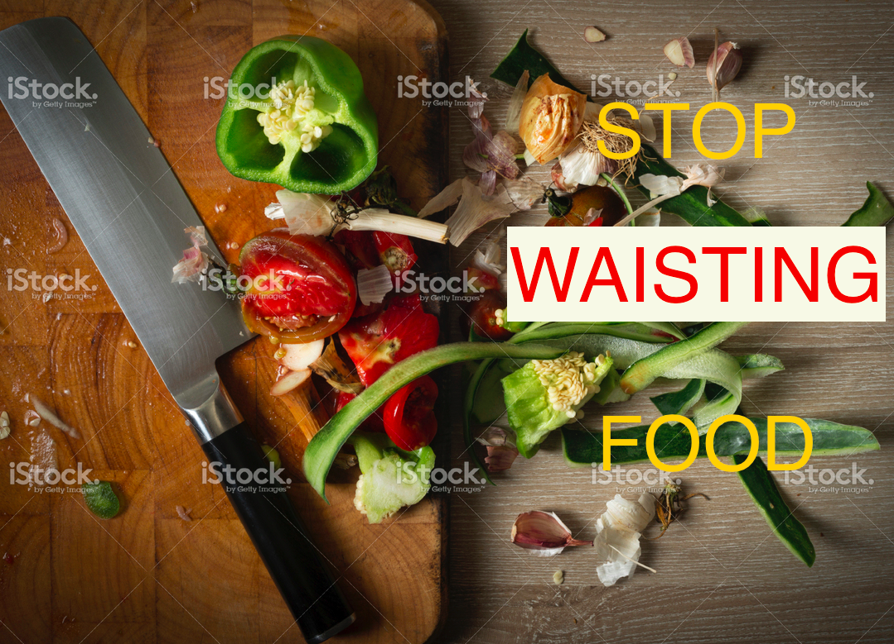

FOOD WASTE - IS EVERYONE’S BUSINESS
Main Quesitons:
| How/What/When/Why | Teasers | Explore It! |
|---|---|---|
| How much food is wasted worldwide, by country? |
According to FAO 1/3 of total food produced globally goes to waste. Some countries waste more food than others - many factors come into play. |
Select a year & Click on a country. |
| Which types of foods are most wasted? |
Some food types are wasted more than others around the world, and this amount changes across years. High calorie foods are wasted the most. |
Click on the drop down to select from one of the top 10 food types. Even Alcoholic beverages have a place in food waste. |
| What are the temporal trends in food waste? | Food waste is not static; across the years levels of food wasted per country have changed, as well per food type. | With the slider you can check for trends by country and/or food type. |
| How does a country's average income correlate with food waste? | Countries with higher average income tend to waste more food. | With the line graph you can see the relationship between food waste and income per capita. |
| What can be done locally to reduce food waste? | Everyone can reduce the amount of food wasted - you can do this with simple changes to your day-to-day life. |
Check out the map for a food bank or food pantry near you. Don’t miss our STOP WASTING FOOD tips! Easy to do & share. |
Food Waste as a Global Problem
It’s estimated that 1.3 Gtonnes of edible food are wasted world wide, and this is costing the world approximately USD 750 billion.
Overall, on a per-capita basis, much more food is wasted in the industrialized world than in developing countries.
Cereals (excluding beer) are the biggest contributor to food waste. Did you know that - cereals provide more food energy worldwide than any other type of crop?
Food Waste as a Local Problem
In America it’s estimated that 1860000 tones of food were wasted in 2011. Image 6000 airplanes with cargo- putting them together they will create a line long enough to cover the distance BOSTON - PARIS.

Consumer and foodservice food waste is the largest source of food waste, this includes restaurants, universities and hospitals. This issue happens in all countries and in all cities, including your city. Discover the main contributors of food waste in Boston.
Food Waste as a Personal Problem
Food waste affects us all.
Food waste has an ecological and economical impact that permeates through all aspects of our life.
You can help to turn it around, by taking some small steps - and STOP WASTING FOOD.
There is a lot you can doto reduce the amount of food waste you and your close ones produce. Some tips for you:
Shop Wisely - plan your meals, try not to fall for impulse buys that you will later throw away.
Buy fruit and vegetables of all size and colors - a lot of fruits and vegetables go to waste because they don’t look like in the magazines, but even funny looking ones taste delicious.
Eat leftovers - there is nothing wrong with asking for a doggy bag after eating out - you can enjoy it later or the next day.
Donate Food: you can donate that extra food instead of throwing it away to food banks or food pantries
There are many institutions like these close to you, check this map to find the closest to you.
You can also encourage your friends and family to donate theirs.